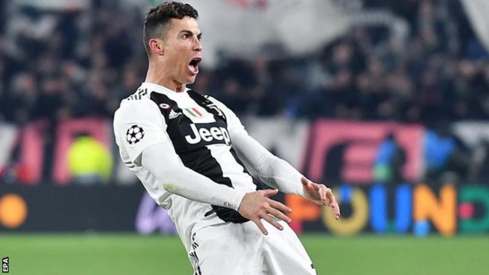

Football
Juventus forward Cristiano Ronaldo has been fined 20,000 euros (£17,700) by Uefa for a goal celebration in the win over Atletico Madrid in the last 16 of the Champions League. The 34-year-old appeared to mimic Atletico boss Diego Simeone, who turned to fans and grabbed his crotch during his side's 2-0 first-leg victory. Ronaldo made the gesture when completing his hat-trick in the return leg as Juventus won 3-0.